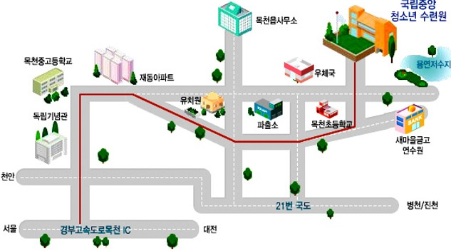

<table width="660"><tr><td>

<h1>
정보과학회 프로그래밍언어연구회 (SIGPL)
<br>2007 겨울학교
</h1>
<center><table><tr><th align="left">
<li>일시: 2007년 2월 8일(목)-10일(토)
<li>장소: <a href="http://www.nyc.or.kr">천안 병천면 국립중앙청소년수련원</a>
</td></tr></table>
</center>
<br>
 <p>
안녕하십니까?  한국정보과학회 프로그래밍언어연구회(SIGPL)는 매년 여름과
겨울 방학기간에 대학원생과 엔지니어, 교수, 연구자들을 대상으로
계절학교를 개최합니다. 계절학교는 프로그래밍언어 분야의 기초 이론에서
최신 응용 분야에 이르기까지 해당 전문가의 직관적이고 깊이있는 강좌를
마련하고 있습니다.  
</p>
<p>
금년 겨울학교는 천안 병천면에
있는 <a href="http://www.nyc.or.kr">국립중앙청소년수련원</a>에서 2월
8일부터 10일까지 열립니다. 금년에는 특별히 프로그래밍언어 이론 뿐만
아니라 건강에 관한 강좌를 마련하였습니다. 많은 관심과 참여를
부탁드립니다.
</p>

<br><b>한국정보과학회 프로그래밍언어연구회 운영위원장 표창우</b>

<h2> 프로그램  </h2>

<table border="1pt" bordercolor="#808080" cellspacing="0"><tr><td>
<table>
<tr bgcolor="#ffddcc"><td colspan="2">
  2/8(목) 
  </td><td>발표자
  </td><td>좌장
</td></tr><tr><td>
13:00
  </td><td>  등록
</td></tr><tr><td>
15:00
  </td><td> 
  개회식
  </td><td>
  개회사: 표창우 (홍익대)
  </td><td>
  창병모 (숙명여대)
</td></tr><tr><td>
15:30
  </td><td> 
  Logic in Programming Language
  <br>정리증명기
  </td><td>
  정주희 (경북대)
  </td><td>
  이욱세 (한양대)
</td></tr><tr><td>
17:00
  </td><td> 
  식생활과 건강
  </td><td>
  박유경 (경희대)
  </td><td>
  도경구 (한양대)
</td></tr><tr><td>
18:00
  </td><td> 
  저녁식사 및 활동
</td></tr>
<tr bgcolor="#ffddcc"><td colspan="2">
  2/9(금) 
  </td><td>발표자
  </td><td>좌장
</td></tr><tr><td>
09:00
  </td><td>
  Programming Language in Software Engineering 
  </td><td>  
  김문주 (KAIST)
  </td><td>
  우균 (부산대)
</td></tr><tr><td>
10:30 
  </td><td>
  Programming Language in Business
  <br>Erlang: History, Concept and Application
  </td><td> 곽남영 사장 (WINIT)
  </td><td> 조장우 (동아대)
</td></tr><tr><td>
12:00 
  </td><td> 점심
</td></tr><tr><td>
13:30
  </td><td> Programming Language in Security 
  </td><td> 이은영 (동덕여대)
  </td><td> 조은선 (충남대)
</td></tr><tr><td>
15:00    
  </td><td> Programming Language in Embbeded Software
  </td><td> 한환수 (KAIST)
  </td><td> 변석우 (경성대)
</td></tr><tr><td>
16:30
  </td><td> Current Issues in Programming Language 
  </td><td> 박성우 (포항공대)
  </td><td> 창병모 (숙명여대)
</td></tr><tr><td>
18:00
  </td><td> 저녁식사 및 활동
</td></tr><tr><td>
<tr bgcolor="#ffddcc"><td colspan="2">
  2/10(토) 
  </td><td>발표자
  </td><td>좌장
</td></tr><tr><td valign="top">
09:00
  </td><td>
  Future Leaders in Programming Languages
  <br>석박사 학생 연구 방향 발표 및 토론
  </td><td>  
  </td><td>
  이은영 (동덕여대)
</td></tr><tr><td>
  </td><td>타입레벨 프로그래밍의 간소화
  </td><td>차리서 (고려대)
</td></tr><tr><td>
  </td><td>Parallelizing OpenGL Applications
  </td><td>신건철 (KAIST)
</td></tr><tr><td>
  </td><td>Type Reconstruction in Rank-2 Fragment of <br>the Polymorphic 
           Modal Lambda-Calculus
  </td><td>임현승 (포항공대)
</td></tr><tr><td>
  </td><td>A Practical String Analyzer by the Widening Approach
  </td><td>최태형 (한양대)
</td></tr><tr><td>
11:45 
  </td><td> 폐회 및 사진촬영
</td></tr>

</table>
</td></tr></table>


<h2> 등록안내 </h2>
<ul>
<li> 등록비 
<table border="1" bordercolor="#808080" cellspacing="0">
<tr><th>&nbsp;</th><th>학생</th><th>일반회원</th><th>비회원</th></tr>
<tr align="center"><th>등록비</th><td>150,000원</td><td>200,000원</td><td>250,000원</td></tr>
</table>
<li> 등록비에는 숙식, 간식 및 음료, 기념품 등 포함
<li> 영수증은 당일 등록과 동시에 등록 데스크에서 발급
<li> 등록 방법: <font color="red">2월 6일</font>까지 등록페이지를 통하여 등록
</ul>


<h2> 준비위원회 </h2>
<ul>
<li> 준비위원장: 신승철 교수 (한국기술교육대)
<li> 학술위원장: 최진영 교수 (고려대)
<li> 문의: 총무 창병모 교수 (숙명여대)
</ul>

<h2> 장소안내 </h2>
<ul>
<li> 국립중앙청소년수련원 오시는길
<br> &nbsp; &nbsp; 
<li> 교통편
<ul>
<li><b>기차</b>:  	천안역 하차후 독립기념관행 버스이용 목천읍사무소 하차(35분소요)
<li><b>고속버스</b>: 	천안 고속버스터미널 하차후 독립기념관행 버스이용 목천읍사무소 하차(40분소요)
<li><b>KTX(고속철도)</b>: 	

1번버스로 천안역 하차후 독립기념관행 버스이용 목천읍사무소 하차 (35분 소요),
2번버스로 천안역 하차후 독립기념관행 버스이용 목천읍사무소 하차 (40분 소요)
<li><b>시외버스</b>: 	천안 시외버스터미널 하차후 고속버스터미널 앞에서 독립기념관행 버스이용
(40분 소요)
<li><b>일반버스</b>: 	320, 350, 352, 380, 381, 390, 400, 410, 411, 412 ,413 ,420, 421, 422, 423,
424, 430, 431, 432, 440, 441, 442, 450, 460, 470, 580, 481, 490번 버스이용
(목천읍 사무소앞 하차.)
<li><b>좌석버스</b>: 	401,402번 버스이용 - 목천읍 사무소앞 하차. (도보로 약 15분소요)
<li><b>자가차량</b>: 	경부고속도로 목천(독립기념관) 인터체인지에서 3 Km (3분)
천안에서 21번 국도 이용시 13km (20분)
중부고속도로 진천 인터체인지에서 30km (30분) 
</ul>
</ul>

</td></tr></table>
